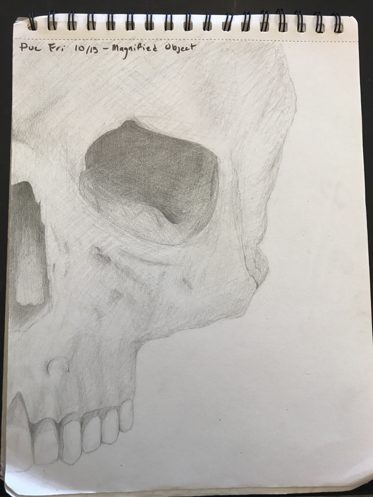
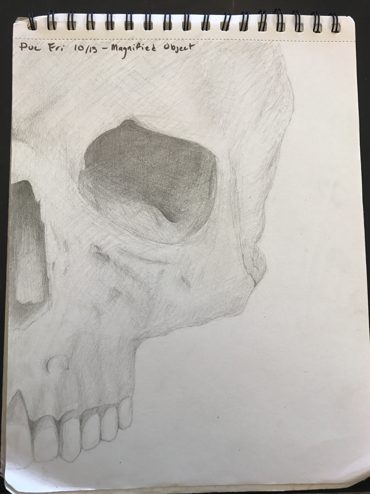

Email: casperbonfilio@gmail.com
Phone Number: 508-801-7036
92 South Street, Medfield MA
601 Wilkins Glen Road, Medfield MA
Medfield High School Sophomore, Class of 2020
November 13th, 2001
Although I dont have much work experience, I believe I would be an excellent canidate for this job because of my ability to overcome challenging issues. I am good at following directions given by others, but i'm also not afraid to take the lead when necessary.
GPA: 3.42
Gold in MAJE '18
Bronze in MICCA '17
Bronze in MICCA '18
Eight grade art award.
 
